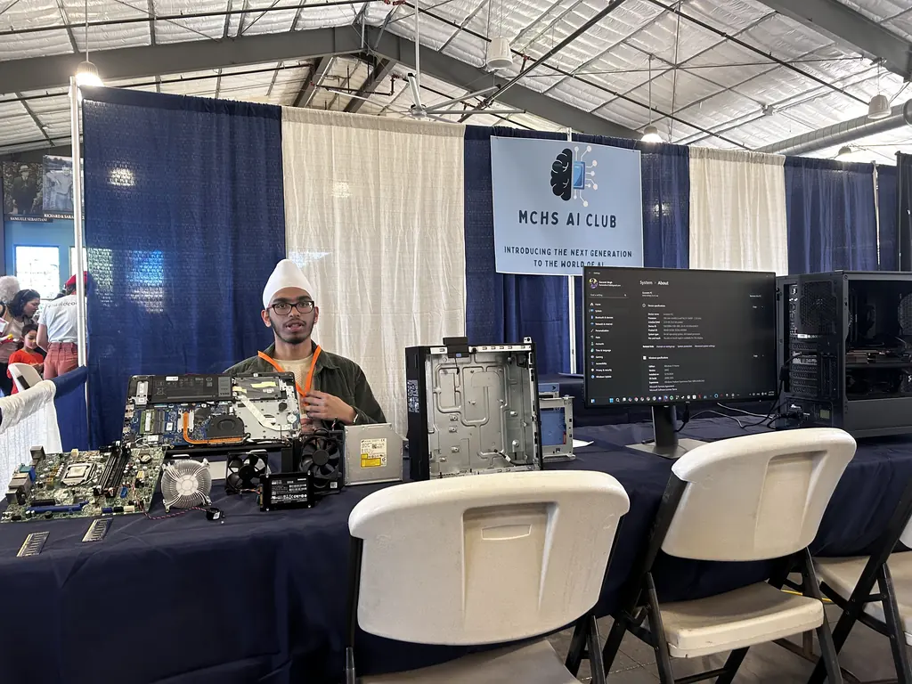
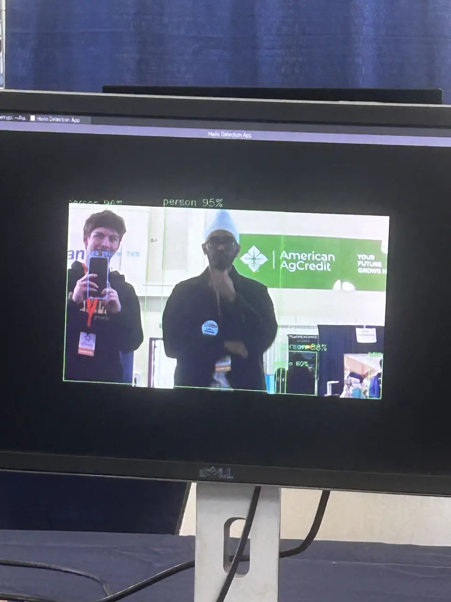

What is it?
We trained a custom YOLOv8 model in PyTorch using publicly available datasets to detect objects in real time.
YOLO (You Only Look Once) was the obvious choice since it is very fast and able to run in real time on non-specialized hardware.
The project, led by Wiley Mallgren, took about 3 months to complete, and is still being improved. We are currently working on applying it to detection of different types of trash based on their recyclability! We always aspire to make the world a better place.
North Bay Science Discovery Day
The North Bay Science Discovery Day is an annual event that brings together science enthusiasts, researchers, educators, and the general public to celebrate and explore various scientific fields.
At our booth, we demonstrated our object detection model in action, showcasing its capabilities and potential applications. We also encouraged attendees to question the output of the model. When it made mistakes, we used it as a learning opportunity to explain why not to blindly trust AI.

